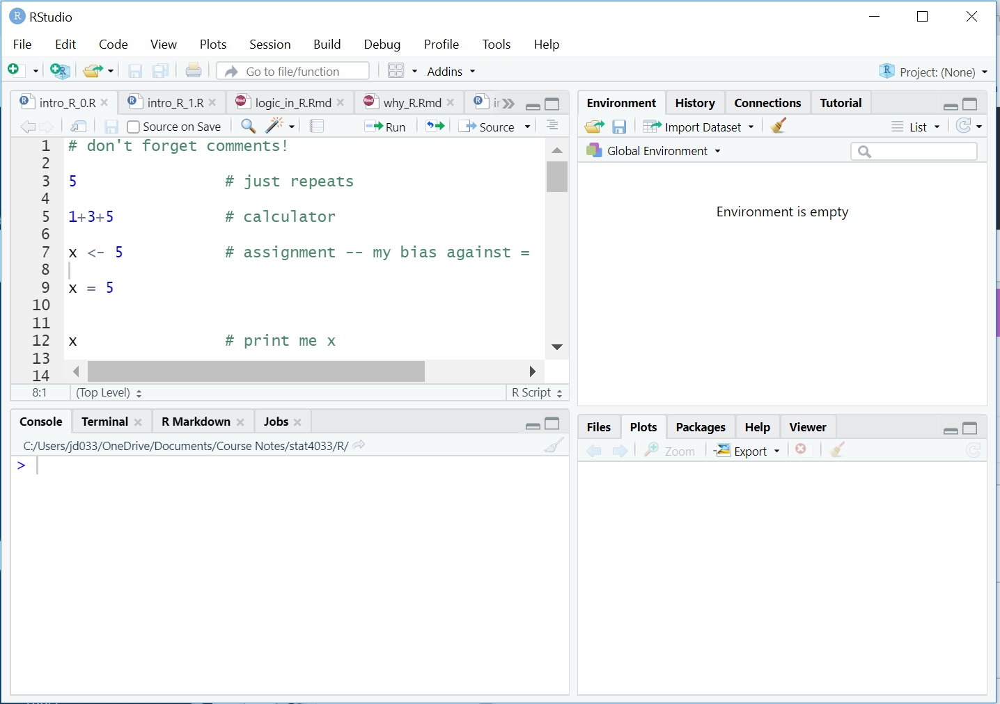

?barplotBefore we start
Learning Objectives
- Articulating motivations for using R
- Introduce participants to the RStudio interface
- Point to relevant information on how to get help, and understand how to ask well formulated questions
Basics of R
R is a versatile, open source programming/scripting language that’s useful both for statistics but also data science. Inspired by the programming language S.
- Open source software under GPL.
- Superior (if not just comparable) to commercial alternatives. R has over 7,000 user contributed packages at this time. It’s widely used both in academia and industry.
- Available on all platforms.
- Not just for statistics, but also general purpose programming.
- For people who have experience in programmming: R is both an object-oriented and a so-called functional language
- Large and growing community of peers.
Awesome R tools
Knitr/R-markdown
Knitr is an R library that allows you to create dynamic code reports.
Example:
This BuzzFeed article, reporting on government surveillance planes, included all of their analysis as an R-markdown document.
Shiny
Shiny is a web application framework built for R.
Example:
This is a shiny app to visualize and explore a movie dataset.
RStudio
RStudio is an IDE- an integrated development environment. It allows us to write, execute, and debug R code. It also has several other nice features, accessible through its GUI (graphical user interface), that make it easier to use R.
RStudio is such a popular tool among R users, that several other languages have tried to emulate it, such as Spyder for Python.
Start RStudio – Let’s start learning about our tool.
Rstudio’s layout includes 4 quadrants
- Scripts
- Console
- Environment/History
- Plotting/Packages/Help

To adjust the layout of your quadrants go to Preferences > Pane Layout
Interacting with R
There are two main ways of interacting with R: using the console or by using script files (plain text files that contain your code).
The console window is the place where R is waiting for you to tell it what to do, and where it will show the results of a command. You can type commands directly into the console, but they will be forgotten when you close the session. It is better to enter the commands in the script editor, and save the script. This way, you have a complete record of what you did, you can easily show others how you did it and you can do it again later on if needed. You can copy-paste into the R console, but the Rstudio script editor allows you to ‘send’ the current line or the currently selected text to the R console using the Ctrl-Enter shortcut.
If R is ready to accept commands, the R console shows a > prompt. If it receives a command (by typing, copy-pasting or sent from the script editor using Ctrl-Enter), R will try to execute it, and when ready, show the results and come back with a new >-prompt to wait for new commands.
If R is still waiting for you to enter more data because it isn’t complete yet, the console will show a + prompt. It means that you haven’t finished entering a complete command. This is because you have not ‘closed’ a parenthesis or quotation. If you’re in Rstudio and this happens, click inside the console window and press Esc; this should help you out of trouble.
Seeking help
I know the name of the function I want to use, but I’m not sure how to use it
If you need help with a specific function, let’s say barplot(), you can type:
If you just need to remind yourself of the names of the arguments, you can use:
args(lm)If the function is part of a package that is installed on your computer but don’t remember which one, you can type:
??geom_pointI want to use a function that does X, there must be a function for it but I don’t know which one…
If you are looking for a function to do a particular task, you can use help.search() (but only looks through the installed packages):
help.search("kruskal")If you can’t find what you are looking for, you can use the rdocumention.org website that search through the help files across all packages available.
I am stuck… I get an error message that I don’t understand
Start by googling the error message. However, this doesn’t always work very well because often, package developers rely on the error catching provided by R. You end up with general error messages that might not be very helpful to diagnose a problem (e.g. “subscript out of bounds”).
However, you should check stackoverflow. Search using the [r] tag. Most questions have already been answered, but the challenge is to use the right words in the search to find the answers: http://stackoverflow.com/questions/tagged/r
The Introduction to R can also be dense for people with little programming experience but it is a good place to understand the underpinnings of the R language.
The R FAQ is dense and technical but it is full of useful information.
Asking for help
The key to get help from someone is for them to grasp your problem rapidly. You should make it as easy as possible to pinpoint where the issue might be.
Try to use the correct words to describe your problem. For instance, a package is not the same thing as a library. Most people will understand what you meant, but others have really strong feelings about the difference in meaning. The key point is that it can make things confusing for people trying to help you. Be as precise as possible when describing your problem
If possible, try to reduce what doesn’t work to a simple reproducible example. If you can reproduce the problem using a very small data.frame instead of your 50,000 rows and 10,000 columns one, provide the small one with the description of your problem. When appropriate, try to generalize what you are doing so even people who are not in your field can understand the question.
If you want to share your object, provide either the raw file (i.e., your CSV file) with your script up to the point of the error (and after removing everything that is not relevant to your issue). Alternatively, in particular if your questions is not related to a data.frame, you can save any R object to a file:
saveRDS(iris, file="/tmp/iris.rds")The content of this file is however not human readable and cannot be posted directly on stackoverflow. It can however be sent to someone by email who can read it with this command:
some_data <- readRDS(file="~/Downloads/iris.rds")Last, but certainly not least, always include the output of sessionInfo() as it provides critical information about your platform, the versions of R and the packages that you are using, and other information that can be very helpful to understand your problem.
sessionInfo()R version 4.2.1 (2022-06-23 ucrt)
Platform: x86_64-w64-mingw32/x64 (64-bit)
Running under: Windows 10 x64 (build 19043)
Matrix products: default
locale:
[1] LC_COLLATE=English_United States.utf8
[2] LC_CTYPE=English_United States.utf8
[3] LC_MONETARY=English_United States.utf8
[4] LC_NUMERIC=C
[5] LC_TIME=English_United States.utf8
attached base packages:
[1] stats graphics grDevices utils datasets methods base
other attached packages:
[1] learnr_0.11.5.9000 shiny_1.7.2
loaded via a namespace (and not attached):
[1] Rcpp_1.0.9 rstudioapi_0.14 knitr_1.40 magrittr_2.0.3
[5] xtable_1.8-4 R6_2.5.1 rlang_1.0.6 fastmap_1.1.0
[9] stringr_1.4.1 tools_4.2.1 xfun_0.40 cli_3.4.0
[13] jquerylib_0.1.4 withr_2.5.0 htmltools_0.5.5 ellipsis_0.3.2
[17] rprojroot_2.0.3 yaml_2.3.5 digest_0.6.29 fontawesome_0.5.2
[21] lifecycle_1.0.3 later_1.3.0 htmlwidgets_1.6.2 promises_1.2.0.1
[25] evaluate_0.16 mime_0.12 rmarkdown_2.25 stringi_1.7.8
[29] compiler_4.2.1 jsonlite_1.8.0 httpuv_1.6.6 Where to ask for help?
- Your friendly colleagues: if you know someone with more experience than you, they might be able and willing to help you.
- Stackoverflow: if your question hasn’t been answered before and is well crafted, chances are you will get an answer in less than 5 min.
- The R-help: it is read by a lot of people (including most of the R core team), a lot of people post to it, but the tone can be pretty dry, and it is not always very welcoming to new users. If your question is valid, you are likely to get an answer very fast but don’t expect that it will come with smiley faces. Also, here more than everywhere else, be sure to use correct vocabulary (otherwise you might get an answer pointing to the misuse of your words rather than answering your question). You will also have more success if your question is about a base function rather than a specific package.
- If your question is about a specific package, see if there is a mailing list for it. Usually it’s included in the DESCRIPTION file of the package that can be accessed using
packageDescription("name-of-package"). You may also want to try to email the author of the package directly. - There are also some topic-specific mailing lists (GIS, phylogenetics, etc…), the complete list is here.
More resources
- The Posting Guide for the R mailing lists.
- How to ask for R help useful guidelines